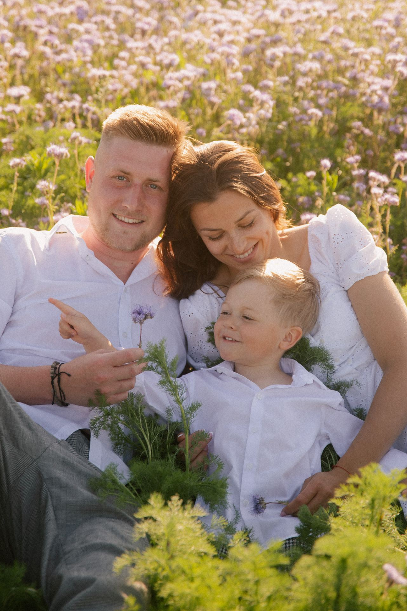
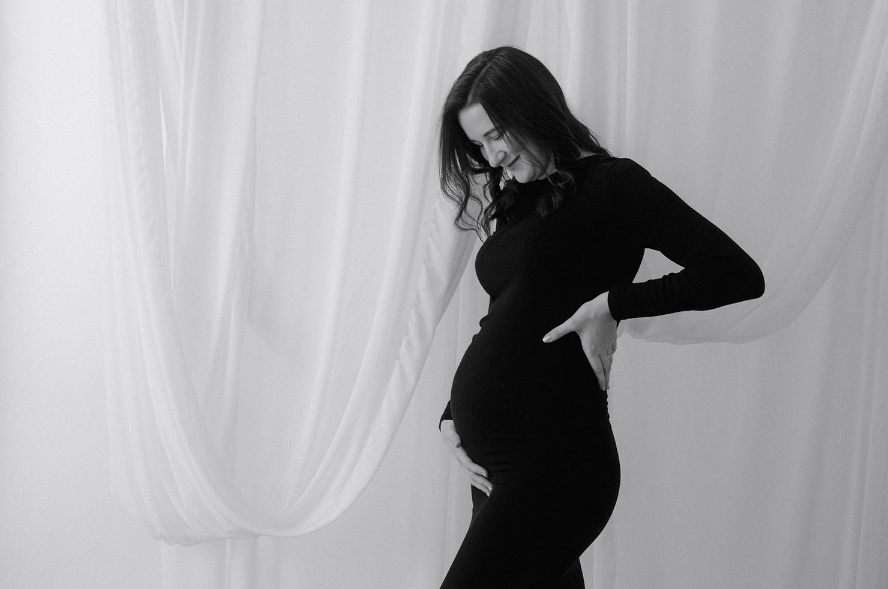
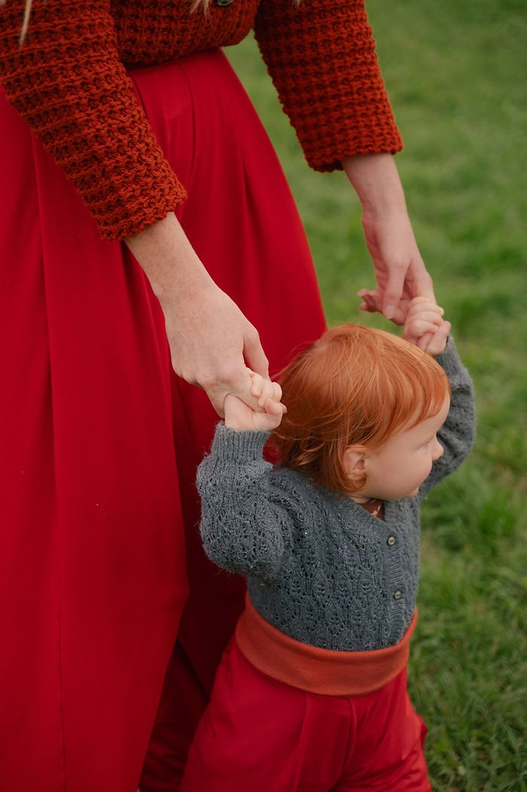
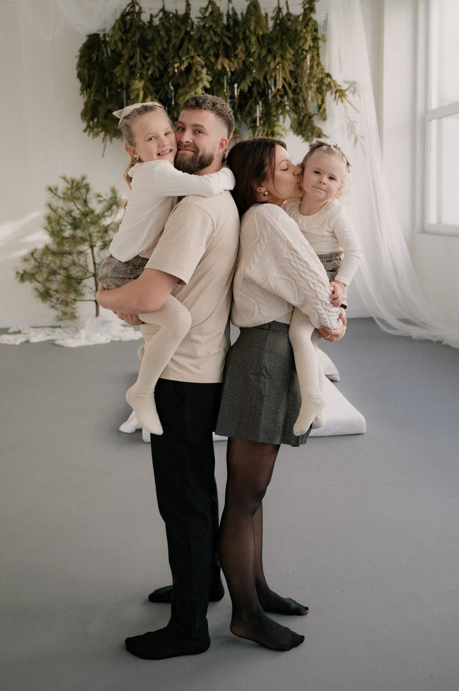
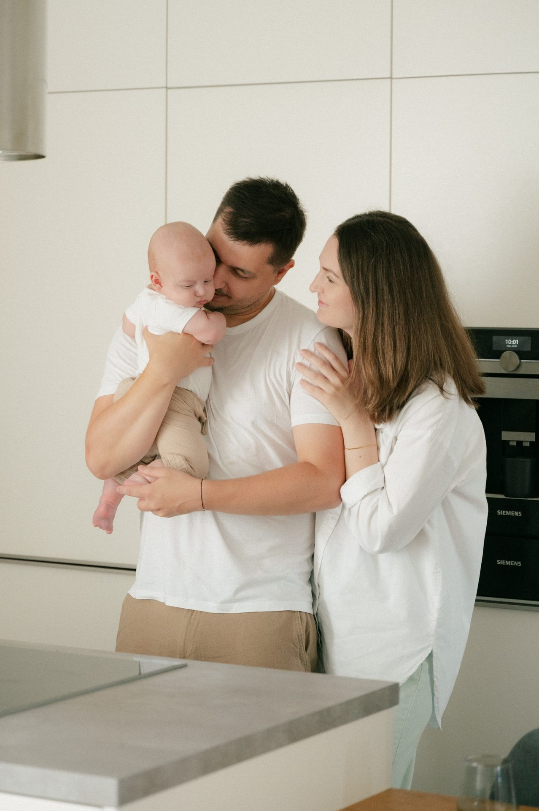

rodinné focení jako vzpomínka
Proč má smysl ho dělat pravidelně a proč ho tak miluju 🥰
„Čas letí.“
Všichni to říkáme, všichni to víme – ale naplno si to uvědomíme většinou až při pohledu na staré fotky nebo až když je pozdě.
Děti, které ještě před chvílí lezly po čtyřech, dnes běhají do školy. Naši rodiče, kteří se o nás celý život starali, dnes mají na tváři o pár vrásek navíc a možná teď potřebují, abychom se na oplátku postarali my o ně.
A my si přejeme, abychom mohli ty chvíle prožít znovu – i když jen na okamžik.
A přesně o tom rodinné focení je. Ne o dokonalých pózách nebo perfektních outfitech. Ale o zachycení okamžiků, které tvoří váš příběh.
každý rok je jiný
Každý rok se v rodině něco změní. Děti vyrostou, na nás jde vidět, jak vnitřně rosteme, máme jiné priority a třeba jsme změnili práci nebo bydlíme v jiném bytě. Rodinné fotky jsou krásný způsob, jak ten vývoj zachytit – a jak se po letech podívat zpátky a vidět, kolik lásky, smíchu i obyčejných dní za tím vším bylo.

Fotím rodiny, které ke mně chodí každý rok. Vždycky se těší, až se na fotky podívají a zjistí, co všechno se změnilo, a až si aspoň na chvíli prožijí ty krásné momenty, kdy byli spolu.
focení není povinnost, ale chvíle pro vás
Vím, že pro spoustu lidí může být představa focení stresující.
„Děti stejně neposedí.“
„Já nejsem fotogenická.“
„Nevím, co si obléct.“
Tyhle věty slyším často. Ale pokaždé, když focení skončí, slyším jinou:
„Bylo to vlastně hrozně příjemné a ani jsme si neuvědomili, že jsme na focení!“
Rodinné focení není jen o fotkách. Je to čas, kdy se konečně zastavíte. Kdy se smějete, hrajete si, obejmete se – a ani si neuvědomíte, že vás u toho někdo fotí.

fotky, které budou mít jednou nevyčíslitelnou hodnotu
Možná teď máte pocit, že fotky jsou jen „něco navíc“.
Ale za pár let – až budete listovat albem – se budete smát, dojímat a říkat si: „Tohle bylo to období, kdy…“
Fotky mají zvláštní sílu. Vrací vás zpátky do míst a chvil, které už dávno nejsou, ale pořád v nás žijí. Jednoho dne pro vás ty snímky budou nejcennějším mostem do minulosti. 🌿

jak často má smysl se fotit
Rodinné focení dává největší smysl dělat pravidelně – třeba jednou ročně. Nemusí to být vždy stejné prostředí nebo stejné období. Naopak – právě ta pestrost dělá váš příběh autentickým.
Pro někoho je to letní focení v přírodě, pro jiné zase koulování se na zasněžené louce nebo třeba klidné dny strávené u vás doma. Přemýšlejte o focení tak, že chcete zachovat, jací doopravdy jste, co vás vystihuje.



co si z toho mám teda odnést?
Vzpomínky sice žijí v našich hlavách, ale časem se nám chtě nechtě promění nebo vytratí úplně. Fotky jim ale dávají tvar a díky nim se můžeme znovu přenést do chvil, které jsou pro nás cenné.
Umožňují nám dotknout se času, který už odešel – a připomenout si, co je opravdu důležité.
Pokud máte pocit, že letos chcete něco uchovat, něco pro sebe – pojďme zachytit vaši rodinu takovou, jaká je právě teď.
Protože za pár let vám ty fotky řeknou víc, než by kdy dokázala slova. 🤍
Rodinné focení fotím v Brně i v Bratislavě – venku v přírodě, ve studiu nebo klidně u vás doma. Jak takové focení u mě probíhá, si můžete přečíst tady, ceny najdete v ceníku a ukázky rodinných fotek v portfoliu.
📩 Rezervujte si svůj termín přes kontaktní formulář.
Znáš někoho, komu by tenhle článek pomohl? Klidně mu ho pošli.

mohlo by tě zajímat
Další články, které se ti můžou hodit.
 rady před focením · 4 min čtení
rady před focením · 4 min čteníjak se obléct na vánoční focení v ateliéru
Nevíte, co si vzít na vánoční focení? Mám pro vás pár tipů, jak se obléct tak, aby fotky působily přirozeně, útulně a nadčasově.
číst dál rady před focením · 3 min čtení
rady před focením · 3 min čteníuniverzální lokace na focení, které máte na dosah
Často mi lidé píšou, že kolem sebe nemají žádné hezké místo na focení. A pokaždé se usměju, protože krásné fotky nevznikají díky místu, ale díky vám.
číst dál rady před focením · 4 min čtení
rady před focením · 4 min čteníjak u mě probíhá rodinné a párové focení
Nečekejte, že se budu přehnaně chválit. Chci vám přiblížit, jakým způsobem přistupuji k rodinnému a párovému focení.
číst dál